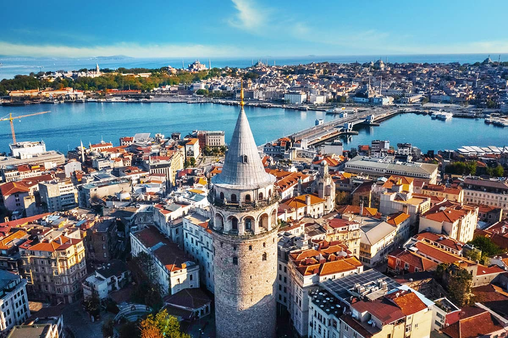
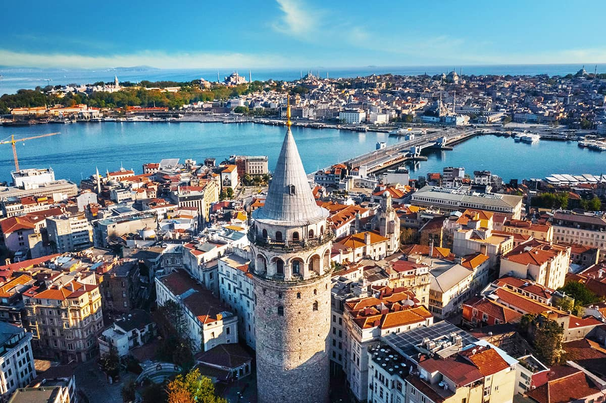

Istanbul
Istanbul, one of Turkey's largest and most popular cities, boasts a rich blend of history, culture, and stunning architecture. Situated at the crossroads of Europe and Asia, it serves as a bridge between two continents, with the iconic Bosphorus Strait dividing the city between its European and Asian sides.
The city's history dates back thousands of years, with its roots tracing to ancient Greek times when it was known as Byzantion. Later, as Constantinople, it became the capital of the Roman Empire's eastern half and subsequently the Byzantine Empire. In 1453, it was conquered by the Ottoman Empire under the leadership of Mehmed the Conqueror, who transformed it into Istanbul, serving as the capital of the Ottoman Empire for centuries.
Today, Istanbul is a vibrant metropolis teeming with cultural treasures, architectural marvels, and bustling markets. Here are some of the must-see attractions:
Hagia Sophia: Originally built as a cathedral in the 6th century, then converted into a mosque during the Ottoman era, and now functioning as a museum, Hagia Sophia is a UNESCO World Heritage Site renowned for its massive dome and stunning mosaics.
Topkapi Palace: Once the residence of Ottoman sultans, Topkapi Palace offers visitors a glimpse into the opulent lifestyle of the Ottoman court. Explore its lavish chambers, sprawling gardens, and impressive collections of art and artifacts.
Blue Mosque (Sultan Ahmed Mosque): Adorned with its distinctive blue tiles, the Blue Mosque is an architectural masterpiece of the Ottoman era. Visitors are mesmerized by its grand domes, towering minarets, and intricately decorated interiors.
Grand Bazaar: One of the world's oldest and largest covered markets, the Grand Bazaar is a labyrinth of narrow streets lined with thousands of shops selling everything from spices and textiles to jewelry and ceramics. It's a paradise for shoppers and a cultural experience in itself.
Bosphorus Cruise: Take a leisurely cruise along the Bosphorus to enjoy panoramic views of Istanbul's skyline, including iconic landmarks like the Maiden's Tower, Dolmabahçe Palace, and Ortaköy Mosque.
Galata Tower: Offering panoramic views of the city, the Galata Tower is a medieval stone tower located in the Galata district. It's a popular spot to watch the sunset and capture breathtaking photos of Istanbul.
Basilica Cistern: This ancient underground water cistern, featuring rows of marble columns and atmospheric lighting, provides a fascinating glimpse into Istanbul's Byzantine past.
These are just a few highlights of what Istanbul has to offer. With its rich history, vibrant culture, and warm hospitality, Istanbul never fails to captivate visitors from around the globe. Whether you're exploring its ancient landmarks, savoring its delectable cuisine, or soaking in its lively ambiance, Istanbul promises an unforgettable experience.
 
